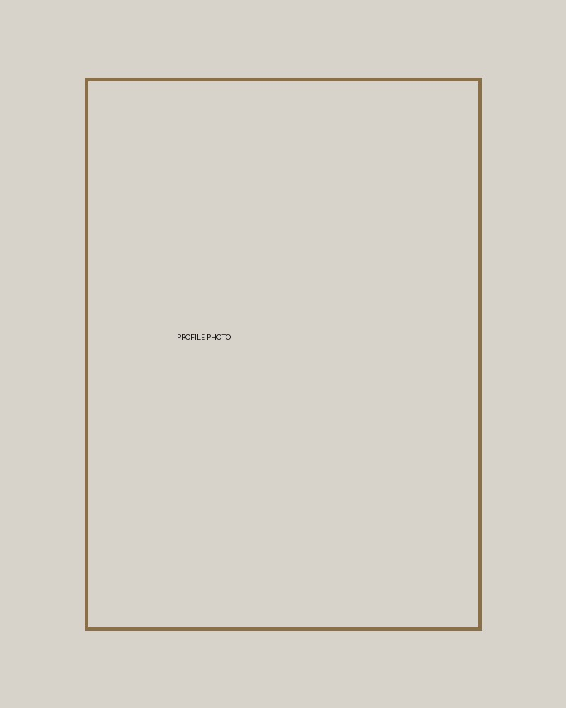
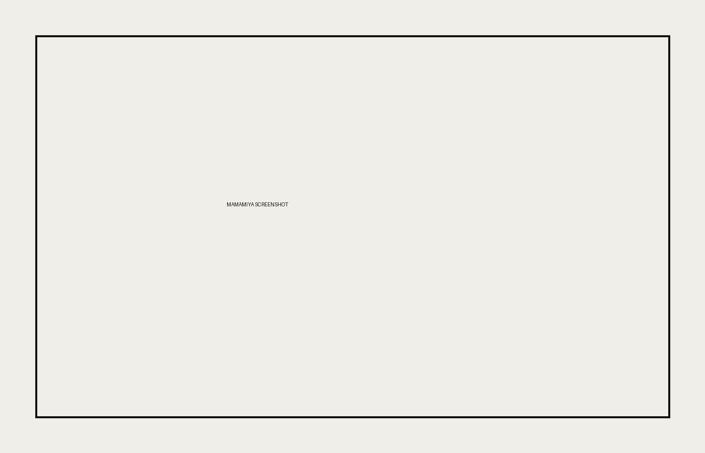

Diploma / Degree in Computer Science
Sunway University
Current studies focus on programming, web development, databases, operating systems and software design.
PERSONAL PORTFOLIO
I am a Computer Science student interested in web design, front-end development and creating clear, user-friendly websites.

Name: Ky Q
Interest: Web Design and Software Development
Goal: To become a front-end or software developer
EDUCATION BACKGROUND
Sunway University
Current studies focus on programming, web development, databases, operating systems and software design.
TECHNICAL SKILLS
I can develop responsive web pages using HTML and CSS, create layouts with Flexbox and Grid, and add basic interactive features using JavaScript. I also have experience developing simple programs in Java and basic systems in Python.
SOFT SKILLS
Communicating ideas clearly and listening carefully to others.
Collaborating with team members and working towards shared goals.
Remaining calm and adjusting effectively when plans change.
FEATURED PROJECTS

A Java system for viewing movies, selecting showtimes, choosing seats and managing bookings.
My contribution: Movie and showtime display, seat selection validation and interface improvements.
A database system for managing donors, donations, inventory, hospitals and blood requests.
My contribution: Database structure, SQL queries, data relationships and report preparation.
A database system for managing donors, donations, inventory, hospitals and blood requests.
My contribution: Database structure, SQL queries, data relationships and report preparation.
CONTACT